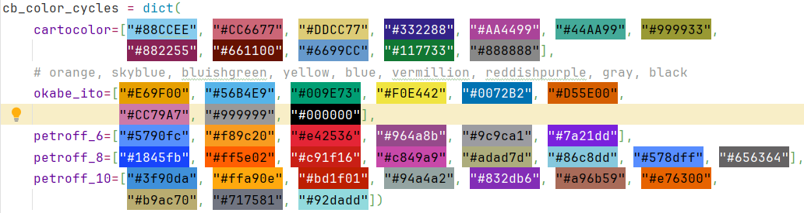

API Documentation
Init file for pylim a package designed to work with measurement data for the radiation group at LIM author: Johannes Röttenbacher
bacardi
Functions to read in quicklook files and attitude correction
author: Johannes Röttenbacher
- pylim.bacardi.fdw_attitude_correction(fdw, roll, pitch, yaw, sza, saa, fdir, r_off: float = 0, p_off: float = 0)[source]
Attitude Correction for downward irradiance. Corrects downward irradiance for misalignment of the sensor (deviation from horizontal alignment).
only direct fraction of irradiance can be corrected by the equation, therefore a direct fraction (fdir) has to be provided
please check correct definition of the attitude angle
for differences between the sensor attitude and the attitude given by an INS the offset angles (p_off and r_off) can be defined.
- Parameters:
fdw – downward irradiance [W m-2] or [W m-2 nm-1]
roll – roll angle [deg] - defined positive for left wing up
pitch – pitch angle [deg] - defined positive for nose down
yaw – yaw angle [deg] - defined clockwise with North=0°
sza – solar zenith angle [deg]
saa – solar azimuth angle [deg] - defined clockwise with North=0°
r_off – roll offset angle between INS and sensor [deg] - defined positive for left wing up
p_off – pitch offset angle between INS and sensor [deg] - defined positive for nose down
fdir – fraction of direct radiation [0..1] (0=pure diffuse, 1=pure direct)
Returns: corrected downward irradiance [W m-2] or [W m-2 nm-1] and correction factor
bahamas
Functions to work with BAHAMAS data
dictionary with plot properties for quicklook maps
function to plot BAHAMAS map
get position
preprocess function for multiple file read in
function to calculate distance between two bahamas samples
author: Johannes Röttenbacher
- pylim.bahamas.calculate_distances(ds: Dataset) Dataset[source]
Calculate geodesic distance between each aircraft time step
- Parameters:
ds – BAHAMAS dataset
Returns: New dataset with geodesic distances
- pylim.bahamas.get_position(flight: str, timestamp: datetime | Timestamp) Tuple[ndarray, ndarray, ndarray][source]
Given the flight and the exact time, get HALOs position.
- Parameters:
flight – Which flight to read in
timestamp – exact time
Returns: latitude (deg), longitude (deg), altitude (m)
- pylim.bahamas.plot_bahamas_flight_track(flight: str, **kwargs)[source]
Plot a map of the flight track from BAHAMAS data with the location of HALO.
- Parameters:
flight – Flight name (eg. Flight_20210707a)
**kwargs – outpath (str): where to save plot (default: bahamas_dir/plots)
Returns: Saves a png file
cirrus_hl
General information about the CIRRUS-HL campaign
lookup dictionary to look up which spectrometer belongs to which inlet, which inlet is measuring up or downward irradiance and which filename part belongs to which channel
dictionary relating flight with flight number
BACARDI offsets
dictionary which relates each measurement with the date of the transfer calibration for that measurement.
take off and landing times according to BAHAMAS
gopro local time and BAHAMAS time offset
stop over locations for each double flight
coordinates of airports
radiosonde stations
specific flight sections
flight hours
ozone files
author: Johannes Röttenbacher
ecrad
Functions translated from FORTRAN code in ecRad
author: Johannes Röttenbacher
- pylim.ecrad.apply_ice_effective_radius(ds: Dataset) Dataset[source]
Apply ice effective radius function over a whole dataset
- Parameters:
ds – IFS DataSet
Returns: DataSet with new variable re_ice containing the ice effective radius for each point
- pylim.ecrad.apply_liquid_effective_radius(ds: Dataset) Dataset[source]
Apply liquid effective radius function over a whole dataset
- Parameters:
ds – IFS DataSet
Returns: DataSet with new variable re_ice containing the ice effective radius for each point
- pylim.ecrad.calc_ice_optics_baran2016(bands: str, ice_wp, qi, temperature)[source]
Compute ice-particle scattering properties using a parameterization as a function of ice water mixing ratio and temperature.
From radiation_ice_optics_baran2016.F90 from the ecRad source code (https://github.com/ecmwf-ifs/ecrad).
Copyright 2016- ECMWF.
This software is licensed under the terms of the Apache Licence Version 2.0 which can be obtained at http://www.apache.org/licenses/LICENSE-2.0.
In applying this licence, ECMWF does not waive the privileges and immunities granted to it by virtue of its status as an intergovernmental organisation nor does it submit to any jurisdiction.
Author: Robin HoganEmail: r.j.hogan@ecmwf.intModifications2023-03-09 J. Röttenbacher Translated to python3- Parameters:
bands – ‘sw’ or ‘lw’, shortwave or longwave bands
ice_wp – Ice water path (kg m-2)
qi – Mixing ratio (kg kg-1)
temperature – Temperature (K)
- Returns:
Total optical depth scat_od: Scattering optical depth g: Asymmetry factor
- Return type:
od
- pylim.ecrad.calc_ice_optics_baran2017(bands: str, ice_wp, qi, temperature)[source]
Compute ice-particle scattering properties using a parameterization as a function of ice water mixing ratio and temperature.
From radiation_ice_optics_baran2017.F90 from the ecRad source code (https://github.com/ecmwf-ifs/ecrad).
Copyright 2017- ECMWF.
This software is licensed under the terms of the Apache Licence Version 2.0 which can be obtained at http://www.apache.org/licenses/LICENSE-2.0.
In applying this licence, ECMWF does not waive the privileges and immunities granted to it by virtue of its status as an intergovernmental organisation nor does it submit to any jurisdiction.
Author: Robin HoganEmail: r.j.hogan@ecmwf.intModifications2023-03-06 J. Röttenbacher Translated to python3- Parameters:
bands – ‘sw’ or ‘lw’, shortwave or longwave bands
ice_wp – Ice water path (kg m-2)
qi – Mixing ratio (kg kg-1)
temperature – Temperature (K)
- Returns:
Total optical depth scat_od: Scattering optical depth g: Asymmetry factor
- Return type:
od
- pylim.ecrad.calc_ice_optics_fu_lw(ice_wp, r_eff)[source]
Compute longwave ice-particle scattering properties using Fu et al. (1998) parameterization.
From radiation_ice_optics_fu.F90 from the ecRad source code (https://github.com/ecmwf-ifs/ecrad).
Copyright 2014- ECMWF.
This software is licensed under the terms of the Apache Licence Version 2.0 which can be obtained at http://www.apache.org/licenses/LICENSE-2.0.
In applying this licence, ECMWF does not waive the privileges and immunities granted to it by virtue of its status as an intergovernmental organisation nor does it submit to any jurisdiction.
Author: Robin HoganEmail: r.j.hogan@ecmwf.intModifications2020-08-10 R. Hogan Bounded r_eff to be <= 100um and g to be < 1.02023-03-06 J. Röttenbacher Translated to python3- Parameters:
ice_wp – Ice water path (kg m-2)
r_eff – Effective radius (m)
- Returns:
Total optical depth scat_od: Scattering optical depth g: Asymmetry factor
- Return type:
od
- pylim.ecrad.calc_ice_optics_fu_sw(ice_wp, r_eff)[source]
Compute shortwave ice-particle scattering properties using Fu (1996) parameterization. The asymmetry factor in band 14 goes larger than one for r_eff > 100.8 um, so we cap r_eff at 100 um. Asymmetry factor is capped at just less than 1 because if it is exactly 1 then delta-Eddington scaling leads to a zero scattering optical depth and then division by zero.
From radiation_ice_optics_fu.F90 from the ecRad source code (https://github.com/ecmwf-ifs/ecrad).
Copyright 2014- ECMWF.
This software is licensed under the terms of the Apache Licence Version 2.0 which can be obtained at http://www.apache.org/licenses/LICENSE-2.0.
In applying this licence, ECMWF does not waive the privileges and immunities granted to it by virtue of its status as an intergovernmental organisation nor does it submit to any jurisdiction.
Author: Robin HoganEmail: r.j.hogan@ecmwf.intModifications2020-08-10 R. Hogan Bounded r_eff to be <= 100um and g to be < 1.02023-03-06 J. Röttenbacher Translated to python3- Parameters:
ice_wp – Ice water path (kg m-2)
r_eff – Effective radius (m)
- Returns:
Total optical depth scat_od: Scattering optical depth g: Asymmetry factor
- Return type:
od
- pylim.ecrad.calc_ice_optics_yi(bands: str, ice_wp, r_eff)[source]
Compute shortwave ice-particle scattering properties using Yi et al. (2013) parameterization.
From radiation_ice_optics_yi.F90 from the ecRad source code (https://github.com/ecmwf-ifs/ecrad).
Copyright 2017- ECMWF.
This software is licensed under the terms of the Apache Licence Version 2.0 which can be obtained at http://www.apache.org/licenses/LICENSE-2.0.
In applying this licence, ECMWF does not waive the privileges and immunities granted to it by virtue of its status as an intergovernmental organisation nor does it submit to any jurisdiction.
Authors: Mark Fielding and Robin HoganEmail: r.j.hogan@ecmwf.intThe reference for this ice optics parameterization is: Yi, B., P. Yang, B.A. Baum, T. L’Ecuyer, L. Oreopoulos, E.J. Mlawer, A.J. Heymsfield, and K. Liou, 2013: Influence of Ice Particle Surface Roughening on the Global Cloud Radiative Effect. J. Atmos. Sci., 70, 2794–2807, https://doi.org/10.1175/JAS-D-13-020.1
Modifications:2023-03-06 J. Röttenbacher Translated to python3- Parameters:
bands – ‘sw’ or ‘lw’, shortwave or longwave bands
ice_wp – Ice water path (kg m-2)
r_eff – effective radius (m)
- Returns:
Total optical depth scat_od: Scattering optical depth g: Asymmetry factor
- Return type:
od
- pylim.ecrad.calc_pressure(ds: Dataset) Dataset[source]
Calculate the pressure at half and full hybrid model level. See https://confluence.ecmwf.int/display/CKB/ERA5%3A+compute+pressure+and+geopotential+on+model+levels%2C+geopotential+height+and+geometric+height
- Parameters:
ds – DataSet as provided from the IFS output
Returns: DataSet with pressure at half and full model level
- pylim.ecrad.calculate_pressure_height(ds: Dataset) Dataset[source]
Calculate the pressure height for the half and full model levels
- Parameters:
ds – Dataset with temperature and pressure on model half and full levels (
pressure_hl,temperature_hl,pressure_full,t)
Returns: Dataset with two new variables
press_height_hlandpress_height_fullin meters
- pylim.ecrad.cloud_overlap_decorr_len(latitude: float, scheme: int)[source]
Implementation of the overlap decorrelation length parameter according to Shonk et al. 2010 (https://doi.org/10.1002/qj.647)
- Parameters:
latitude – Latitude of IFS grid cell
scheme – Which scheme to apply?
Returns: decorr_len_edges_km, decorr_len_water_km, decorr_len_ratio
- pylim.ecrad.get_input_version(version: str) str[source]
Return input version to given version string.
- Parameters:
version – version string (e.g. v15.1)
Returns: Name of version
- pylim.ecrad.get_model_level_of_altitude(altitude: DataArray, model_ds: Dataset, coord: str) DataArray[source]
Retrieve the model levels corresponding to a time series of altitude values such as given by a flight path.
- Parameters:
altitude – time series of altitude values in m, has to have the dimension time
model_ds – model data set with index time, level and/or half_level and variables press_height_hl and/or press_height_full
coord – which vertical coordinate to use for selection, either “half_level” or “level”
Returns:
- pylim.ecrad.get_version_name(version: str) str[source]
Return version name to given version string.
- Parameters:
version – Three character version string (e.g. v15)
Returns: Name of version
- pylim.ecrad.ice_effective_radius(PPRESSURE, PTEMPERATURE, PCLOUD_FRAC, PQ_ICE, PQ_SNOW, PLAT)[source]
From ice_effective_radius.F90 from the ecRad source code (https://github.com/ecmwf-ifs/ecrad).
Copyright 2016- ECMWF.
This software is licensed under the terms of the Apache Licence Version 2.0 which can be obtained at http://www.apache.org/licenses/LICENSE-2.0.
In applying this licence, ECMWF does not waive the privileges and immunities granted to it by virtue of its status as an intergovernmental organisation nor does it submit to any jurisdiction.
Purpose:Calculate effective radius of ice cloudsAuthor:Robin Hogan, ECMWF (using code extracted from radlswr.F90)Original: 2016-02-24Modifications:2022-09-22 J. Röttenbacher translated Sun and Rikus part to python3Ice effective radius = f(T,IWC) from Sun and Rikus (1999), revised by Sun (2001)
- Parameters:
PPRESSURE – (Pa)
PTEMPERATURE –
PCLOUD_FRAC – (kg/kg)
PQ_ICE – (kg/kg)
PQ_SNOW – (kg/kg)
PLAT – (degrees)
Returns: ice effective radius in meter
- pylim.ecrad.liquid_effective_radius(PPRESSURE, PTEMPERATURE, PCLOUD_FRAC, PQ_LIQ, PQ_RAIN)[source]
From liquid_effective_radius.F90 from the ecRad source code (https://github.com/ecmwf-ifs/ecrad).
Copyright 2015- ECMWF.
This software is licensed under the terms of the Apache Licence Version 2.0 which can be obtained at http://www.apache.org/licenses/LICENSE-2.0.
In applying this licence, ECMWF does not waive the privileges and immunities granted to it by virtue of its status as an intergovernmental organisation nor does it submit to any jurisdiction.
Purpose:Calculate effective radius of liquid cloudsAuthor:Robin Hogan, ECMWF (using code extracted from radlswr.F90)Original: 2015-09-24Modifications:2022-09-22 J. Röttenbacher translated Martin et al. (JAS 1994) part to python3- Parameters:
PPRESSURE – (Pa)
PTEMPERATURE –
PCLOUD_FRAC – (kg/kg)
PQ_LIQ – (kg/kg)
PQ_RAIN – (kg/kg)
Returns: liquid effective radius in meter after Martin et al. (JAS 1994)
- pylim.ecrad.make_ecrad_version_overview_csv(version_list: list = None, outpath: str = './docs/files') None[source]
Create a csv file with information on each version of the ecRad simulations
- Parameters:
version_list – list of versions of ecRad simulations e.g. [1, 3, 4, 5.2]
outpath – path where csv file should be saved to
Returns: a csv file
halo_ac3
Background information and lookup dictionaries for the HALO-AC3 campaign
dictionary to look up which spectrometer belongs to which inlet, which inlet is measuring up or downward irradiance and which filename part belongs to which channel.
coordinates of airports and specific locations
radiosonde stations
flight names dictionary relates flight key to complete flight name
dictionary which relates each measurement with the date of the transfer calibration for that measurement.
take off and landing times
gopro offsets from BAHAMAS time
information on stabilization performance
radiation square times
author: Johannes Röttenbacher
helpers
General helper functions and general information
author: Johannes Röttenbacher
- pylim.helpers.cb_color_cycles
- 
Colorblind friendly color cycles from the rcartocolor package, the Okabe-Ito palette [Color Universal Design (CUD) / Colorblind Barrier Free, n.d.] and the survey from Petroff [2021].
- pylim.helpers.arg_nearest(array, value)[source]
Find the index of the nearest value in an array.
- Parameters:
array – Input has to be convertible to an ndarray
value – Value to search for
Returns: index of closest value
- pylim.helpers.delete_folder_contents(folder: str) None[source]
Deletes all files and subfolders in a folder. From: https://stackoverflow.com/questions/185936/how-to-delete-the-contents-of-a-folder
- Parameters:
folder – folder name or full path
Returns: nothing, but deletes all files in a folder
- pylim.helpers.find_bases_tops(mask, rg_list)[source]
This function finds cloud bases and tops for a provided binary cloud mask. :param mask: bool array containing False = signal, True=no-signal :type mask: np.array, dtype=bool :param rg_list: array of range values :type rg_list: np.ndarray
- Returns:
list containing a dict for every time step consisting of cloud bases/top indices, range and width cloud_mask (np.array) : integer array, containing +1 for cloud tops, -1 for cloud bases and 0 for fill_value
- Return type:
cloud_prop (list)
- pylim.helpers.generate_specific_rows(filePath, userows=[])[source]
Function for trajectory plotting
- pylim.helpers.get_cb_friendly_colors(name: str = 'cartocolor') list[source]
Get colorblind friendly color cycle.
- Parameters:
name – Name of color cycle
Returns: List with colorblind friendly colors
- pylim.helpers.get_path(key: str, flight: str = None, campaign: str = 'cirrus-hl', instrument: str = None) str[source]
Read paths from the toml file according to the current working directory.
- Parameters:
key – which path to return, see config.toml for possible values
flight – for which flight should the path be provided (e.g. Flight_20210625a for CIRRUS-HL or HALO-AC3_20220311_HALO_RF01 for HALO-AC3)
campaign – campaign for which the paths should be generated
instrument – if key=all which instrument to generate the path to? (e.g. BAHAMAS)
Returns: Path to specified data
- pylim.helpers.hellinger_distance(p, q)[source]
Compute the Hellinger distance between two probability distributions.
Parameters: p (numpy array): Probability distribution 1 (e.g., histogram). q (numpy array): Probability distribution 2 (e.g., histogram).
Returns: float: Hellinger distance between the two distributions.
Reference: - https://en.wikipedia.org/wiki/Hellinger_distance
- pylim.helpers.longitude_values_for_gaussian_grid(latitudes: ~numpy.array, n_points: ~numpy.array, longitude_boundaries: ~numpy.array = None) -> (<built-in function array>, <built-in function array>)[source]
Calculate the longitude values for each latitude circle on a reduced Gaussian grid. If the longitude boundaries are given only the longitude values within these boundaries are returned.
The ECMWF uses regular/reduced Gaussian grids to represent their model data. These have a fixed number of latitudes between the equator and each pole with either a regular amount of longitude points on each latitude ring or in case of a reduced Gaussian grid with a decreasing number of points towards the poles on each latitude ring. For more information on Gaussian grids as used by the ECMWF see: https://confluence.ecmwf.int/display/FCST/Gaussian+grids
When retrieving data on a reduced Gaussian grid the exact longitude values are not included in the data set and have to be calculated according to the definition of the grid. For this the latitude rings (latitudes) and the amount of longitude points on each latitude ring is needed (n_points). As one rarely retrieves the whole domain of the model the longitude boundaries are also needed to return the correct longitude values.
- Parameters:
latitudes – The latitude values of the Gaussian grid starting in the North
n_points – The number of longitude points on each latitude circle (needs to be of same length as latitudes)
longitude_boundaries – The longitude boundaries (E, W). E =-90, W =90, N=0, S=-180/180
Returns: Two arrays with repeating latitude values and the corresponding longitude values
- pylim.helpers.make_dir(folder: str) None[source]
Creates folder if it doesn’t exist already.
- Parameters:
folder – folder name or full path
Returns: nothing, but creates a new folder if possible
- pylim.helpers.make_flag(boolean_array, name: str)[source]
Make a list of flag values for plotting using a boolean array as input
- Parameters:
boolean_array – array like input with True and False
name – replace True with this string
Returns: list with as many strings as there are True values in the input array
- pylim.helpers.nested_dict_pairs_iterator(dict_obj: dict)[source]
Loop over all values in a nested dictionary and return the key, value pair See: https://thispointer.com/python-how-to-iterate-over-nested-dictionary-dict-of-dicts/
- Parameters:
dict_obj – nested dictionary
Returns: Each value in a nested dictionary with its key
- pylim.helpers.nested_dict_values_iterator(dict_obj: dict)[source]
Loop over all values in a nested dictionary See: https://thispointer.com/python-iterate-loop-over-all-nested-dictionary-values/
- Parameters:
dict_obj – nested dictionary
Returns: Each value in a nested dictionary
- pylim.helpers.read_command_line_args()[source]
Read out command line arguments and save them to a dictionary. Expects arguments in the form key=value.
Returns: dictionary with command line arguments as dict[key] = value
- pylim.helpers.set_cb_friendly_colors(name: str = 'cartocolor')[source]
Set new colorblind friendly color cycle.
- Parameters:
name – Name of color cycle
Returns: Modifies the standard pyplot color cycle
- pylim.helpers.set_xticks_and_xlabels(ax: axis, time_extend: timedelta) axis[source]
This function sets the ticks and labels of the x-axis (only when the x-axis is time in UTC).
- Options:
time_extend > 7 days: major ticks every 2 day, minor ticks every 12 hours
7 days > time_extend > 2 days: major ticks every day, minor ticks every 6 hours
2 days > time_extend > 1 days: major ticks every 12 hours, minor ticks every 3 hours
1 days > time_extend > 12 hours: major ticks every 2 hours, minor ticks every 30 minutes
12hours > time_extend > 6 hours: major ticks every 1 hours, minor ticks every 30 minutes
6 hours > time_extend > 2 hour: major ticks every hour, minor ticks every 15 minutes
2 hours > time_extend > 30 min: major ticks every 15 minutes, minor ticks every 5 minutes
30 min > time_extend > 5 min: major ticks every 5 minutes, minor ticks every 1 minute
else: major ticks every minute, minor ticks every 10 seconds
- Parameters:
ax – axis in which the x-ticks and labels have to be set
time_extend – time difference of t_end - t_start (format datetime.timedelta)
- Returns:
ax - axis with new ticks and labels
- pylim.helpers.set_yticks_and_ylabels(ax: axis, time_extend: timedelta) axis[source]
This function sets the ticks and labels of the y-axis (only when the y-axis is time in UTC).
- Options:
time_extend > 7 days: major ticks every 2 day, minor ticks every 12 hours
7 days > time_extend > 2 days: major ticks every day, minor ticks every 6 hours
2 days > time_extend > 1 days: major ticks every 12 hours, minor ticks every 3 hours
1 days > time_extend > 12 hours: major ticks every 2 hours, minor ticks every 30 minutes
12hours > time_extend > 6 hours: major ticks every 1 hours, minor ticks every 30 minutes
6 hours > time_extend > 2 hour: major ticks every hour, minor ticks every 15 minutes
2 hours > time_extend > 15 min: major ticks every 15 minutes, minor ticks every 5 minutes
15 min > time_extend > 5 min: major ticks every 15 minutes, minor ticks every 5 minutes
else: major ticks every minute, minor ticks every 10 seconds
- Parameters:
ax – axis in which the y-ticks and labels have to be set
time_extend – time difference of t_end - t_start (format datetime.timedelta)
- Returns:
ax - axis with new ticks and labels
- pylim.helpers.setup_logging(dir: str, file: str = None, custom_string: str = None)[source]
Setup up logging to file if script is called from console. If it is executed inside a console setup logging only to console.
- Parameters:
dir – Directory where to save logging file. Gets created if it doesn’t exist yet.
file – Name of the file which called the function. Should be given via the __file__ attribute.
custom_string – Custom String to append to logging file name. Logging file always starts with date and the name of the script being called.
Returns: Logger
libradtran
Functions to process and plot libRadtran simulation files
author: Johannes Röttenbacher
- pylim.libradtran.find_closest_radiosonde_station(latitude: float, longitude: float)[source]
Given longitude and latitude, find the closest radiosonde station from the campaign dictionary
- Parameters:
latitude – in decimal degrees (N=positive)
longitude – in decimal degrees (E=positive)
Returns: Name of the closest radiosonde station
- pylim.libradtran.get_info_from_libradtran_input(filepath: str) dict[source]
Open a libRadtran input file and read out some information.
- Parameters:
filepath – path to file
Returns: Some variables (latitude, longitude, time, header of output file, wavelength range, integrate flag)
- pylim.libradtran.get_netcdf_global_attributes(campaign: str, flight: str, experiment: str)[source]
Return a dictionary with globa attributes for a libRadtran simulation
- Parameters:
campaign – which campaign (cirrus-hl, halo-ac3)
flight – which flight
experiment – which experiment has been run
Returns: dictionary with global attributes
- pylim.libradtran.get_netcdf_variable_attributes(solar_flag: bool, integrate_str: str, wavelength_str: str)[source]
Return a dictionary with variable attributes for a libRadtran simulation
- Parameters:
solar_flag – whether the simulation was a solar or a terrestrial simulation
integrate_str – whether the simulations was integrated at the end or not
wavelength_str – wavelength range of the simulation
Returns: dictionary with variable attributes
- pylim.libradtran.run_uvspec_parallel(input_files: list, uvspec_exe: str)[source]
Run libRadtran simulations for all input files in parallel and check if an output has been created. Rerun the failed simulations a couple of times before quitting.
- Parameters:
input_files – list with full paths to each input file
uvspec_exe – path to uvspec executable
Returns: Writes output and log files in directory of the input files
Raises: UsesWarning if a simulation fails more than 10 times
meteorological_formulas
General meteorological formulas
author: Johannes Röttenbacher
- pylim.meteorological_formulas.barometric_height(pressure_profile, temperature_profile) ndarray[source]
Calculate the barometric height from a pressure and temperature profile.
\[\Delta h = \frac{\log\left(\frac{p(h_1)}{p(h_0)}\right) * R * T(h_1)}{M * g}\]with \(h\) the height in meter, \(R\) the universal gas constant, \(T\) the temperature in Kelvin, \(M\) the molar mass of air and \(g\) earth’s acceleration.
- Parameters:
pressure_profile – pressure profile (Pa)
temperature_profile – temperature profile (K)
Returns: barometric height (m)
@author: Hanno Müller, Johannes Röttenbacher
- pylim.meteorological_formulas.barometric_height_simple(pressure)[source]
Calculate the barometric height assuming a constant temperature of 0°C
- Parameters:
pressure – pressure profile (Pa)
Returns: barometric_height
- pylim.meteorological_formulas.calculate_absorption_coefficient_terrestrial(iwc: ArrayLike, reff: ArrayLike, density=916.7) ArrayLike[source]
Calculate the absorption coefficient (\(\beta_{abs}\)) of an ice cloud layer in the terrestrial wavelength range using the geometric optic assumption (ice particles are large compared to the incoming radiation) according to Eq. 7 in Francis et al. [1994]:
\[\beta_{abs} = \frac{3}{4} \frac{IWC}{\rho_{ice}r_{eff}}\]with \(\rho_{ice}\) the density of ice and \(r_{eff}\) the ice effective radius according to Foot [1988].
Integrating this over altitude results in the optical depth of the ice cloud layer.
- Parameters:
iwc – Ice water content in kg/m^3
reff – Ice effective radius in m
density – Density of ice in kg/m^3
Returns: Absorption coefficient in m^-1 of the ice cloud layer in the solar wavelength range
- pylim.meteorological_formulas.calculate_direct_sea_ice_albedo_ebert(cos_sza: float | DataArray)[source]
Calculate the direct dry snow covered sea ice albedo for a specific solar zenith angle according to Ebert and Curry [1993].
- Parameters:
cos_sza – Cosine of the solar zenith angle
Returns: direct albedo of dry snow covered sea ice
- pylim.meteorological_formulas.calculate_extinction_coefficient_solar(iwc: ArrayLike, reff: ArrayLike, density=916.7) ArrayLike[source]
Calculate the extinction coefficient (\(\beta_{ext}\)) of an ice cloud layer in the solar wavelength range using the geometric optic assumption (ice particles are large compared to the incoming radiation) according to Eq. 10 in Francis et al. [1994]:
\[\beta_{ext} = \frac{3}{2} \frac{IWC}{\rho_{ice}r_{eff}}\]with \(\rho_{ice}\) the density of ice and \(r_{eff}\) the ice effective radius according to Foot [1988].
Integrating this over altitude results in the optical depth of the ice cloud layer.
- Parameters:
iwc – Ice water content in kg/m^3
reff – Ice effective radius in m
density – Density of ice in kg/m^3
Returns: Extinction coefficient in m^-1 of the ice cloud layer in the solar wavelength range
- pylim.meteorological_formulas.calculate_open_ocean_albedo_taylor(cos_sza: ArrayLike)[source]
Calculate the open ocean albedo for direct incoming solar irradiance following Taylor et al. [1996].
\[\alpha = \frac{0.037}{1.1 * \cos(\theta)^{1.4} + 0.15}\]with \(\theta\) being the solar zenith angle in radians.
- Parameters:
cos_sza – cosine of the solar zenith angle
Returns: open ocean albedo
- pylim.meteorological_formulas.relative_humidity_water_to_relative_humidity_ice(relative_humidity_water: float | ndarray | list, temperature: float | ndarray | list, version: str = 'huang')[source]
Convert the relative humidity over water to relative humidity over ice using either the formulas by Huang [2018] or by Alduchov and Eskridge [1996].
\[RH_{ice} = \frac{RH_{water} * e_{s,w}}{e_{s,i}}\]with \(e_{s,w}\) the saturation vapor pressure of water and \(e_{s,i}\) the saturation vapor pressure of ice:
\[ \begin{align}\begin{aligned}e_{s,w} = \frac{\exp\left(34.494 - \frac{4924.99}{t + 237.1}\right)}{(t + 105)^{1.157}} (t > 0°C)\\e_{s,i} = \frac{\exp\left(43.494 - \frac{6545.8}{t + 278}\right)}{(t + 868)^{2}} (t \le 0°C)\end{aligned}\end{align} \]with \(t\) being the temperature in °C. When version is
alduchovthe following equations are used:\[ \begin{align}\begin{aligned}e_{s,w} = 6.1094 * \exp\left(\frac{17.625 * t}{243.04 + t}\right)\\e_{s,i} = 6.1121 * \exp\left(\frac{22.587 * t}{273.86 + t}\right)\end{aligned}\end{align} \]with \(t\) the temperature in °C.
- Parameters:
relative_humidity_water – ambient relative humidity in percent
temperature – ambient temperature in °C
version – which formulas to use for calculating the saturation vapor pressure of water and ice (‘huang’ or ‘alduchov’)
Returns: relative humidity over ice
reader
A collection of reader functions for instruments operated on HALO and model output files
author: Johannes Röttenbacher
- pylim.reader.read_bacardi_raw(filename: str, path: str) Dataset[source]
Read raw BACARDI data as provided by DLR
- Parameters:
filename – name of file
path – path to file
Returns: Dataset with BACARDI data and time as dimension
- pylim.reader.read_bahamas(bahamas_path: str) Dataset[source]
Reader function for netcdf BAHAMAS data as provided by DLR.
- Parameters:
bahamas_path – full path of netcdf file
Returns: xr.DataSet with BAHAMAS data and time as dimension
- pylim.reader.read_cams_file(filepath: str) Dataset[source]
Read a CAMS atmosphere file
- Parameters:
filepath – full path to nc file
Returns: DataSet with
- pylim.reader.read_ecrad_output(filepath: str) Dataset[source]
Read in and preprocess a merged ecRad output file from :py:module:ecrad_merge_files.py
Assign coordinates to dimensions
Calculate pressure height in m
- Parameters:
filepath – Full path to file
Returns: xarray DataSet with added coordinates to all dimensions of the file
- pylim.reader.read_ins_gps_pos(filepath: str) DataFrame[source]
Read in a GPS position file as returned by the HALO-SMART INS system.
- Parameters:
filepath – complete path to Nav_GPSPosxxxx.Asc file
Returns: time series with the GPS position data
- pylim.reader.read_ins_gps_vel(filepath: str) DataFrame[source]
Read in a GPS velocity file as returned by the HALO-SMART INS system.
- Parameters:
filepath – complete path to Nav_GPSVelxxxx.Asc file
Returns: time series with the GPS velocity data
- pylim.reader.read_lamp_file(campaign: str = 'cirrus-hl', filename: str = None, plot: bool = True, save_fig: bool = True, save_file: bool = True) DataFrame[source]
Read in the 1000W lamp specification file interpolated to 1nm steps. Converts W/cm^2 to W/m^2.
- Parameters:
campaign – for which campaign should the lamp file be read in?
filename – name of lamp file to be read in
plot – plot lamp file?
save_fig – save figure to standard plot path defined in config.toml?
save_file – save lamp file to standard calib path deined in config.toml?
Returns: A data frame with the irradiance in W/m² and the corresponding wavelength in nm
- pylim.reader.read_libradtran(flight: str, filename: str) DataFrame[source]
Read an old libRadtran simulation file generated by
01_dirdiff_BBR_Cirrus_HL_Server_jr.proand add a DateTime Index.- Parameters:
flight – which flight does the simulation belong to (e.g. Flight_20210629a)
filename – filename
Returns: DataFrame with libRadtran output data
Reader function for Navigation data file from the INS used by the stabilization of SMART
- Parameters:
nav_path – path to IMS file including filename
Returns: pandas DataFrame with headers and a DateTimeIndex
- pylim.reader.read_ozone_sonde()[source]
Reader function for ames formatted ozone sonde data from http://www.ndaccdemo.org/
- Parameters:
filepath – complete path to file
Returns: pandas DataFrame with ozone volume mixing ratio
- pylim.reader.read_pixel_to_wavelength(path: str, spectrometer: str) DataFrame[source]
Read file which maps each pixel to a certain wavelength for a specified spectrometer.
- Parameters:
path – Path where to find file
spectrometer – For which spectrometer the pixel to wavelength mapping should be read in, refer to lookup table for possible spectrometers (e.g. ASP06_J3)
Returns: pandas DataFrame relating pixel number to wavelength
- pylim.reader.read_smart_cor(path: str, filename: str) DataFrame[source]
Read dark current corrected SMART data files
- Parameters:
path – Path where to find file
filename – Name of file
Returns: pandas DataFrame with column names and datetime index
smart
These are functions in relation with the SMART instrument.
“_” denotes internal functions which are called inside other functions.
The functions are explained in their docstring and can be tested using the main frame. You can:
The reader functions were moved to pylim.reader.
find the closest pixel and wavelength to any given wavelength for the given wavelength calibration file
get information (date, measured property, channel) from the filename
get the dark current for a specified measurement file with either option 1 or 2 and optionally plot it
correct the raw measurement by the dark current
plot the mean corrected measurement
plot smart data either for one wavelength over time or for a range of or all wavelengths
use the holoviews functions to create a dynamic map for interactive quicklooks in a jupyter notebook
author: Johannes Röttenbacher
- pylim.smart.correct_smart_dark_current(flight: str, smart_file: str, option: int, **kwargs) Series[source]
Correct the raw SMART measurement for the dark current of the spectrometer. Only returns data when the shutter was open.
- Parameters:
flight – to which flight does the file belong to? (e.g. Flight_20210707a)
smart_file – filename of file to correct
option – which option should be used to get the dark current? Only relevant for channel “VNIR”.
kwargs – path (str): path to file if not raw file path as given in config.toml, date (str): (yyyymmdd) date from which the dark current measurement should be used for VNIR (necessary if no transfer calibration was made on a measurement day) campaign (str): campaign to which smart file belongs to
Returns: Series with corrected smart measurement
- pylim.smart.find_pixel(df: DataFrame, wavelength: 0.0) Tuple[int, float][source]
Given the dataframe with the pixel to wavelength mapping, return the pixel and wavelength closest to the requested wavelength.
- Parameters:
df – Dataframe with column pixel and wavelength (from read_pixel_to_wavelength)
wavelength – which wavelength are you interested in
Returns: closest pixel number and wavelength corresponding to the given wavelength
- pylim.smart.get_dark_current(flight: str, filename: str, option: int, **kwargs) Series | figure[source]
Get the corresponding dark current for the specified measurement file to correct the raw SMART measurement.
- Parameters:
flight – to which flight does the file belong to? (e.g. Flight_20210707a)
filename – filename (e.g. “2021_03_29_11_07.Fup_SWIR.dat”) of measurement file
option – which option to use for VNIR (1, 2 or 3). Option 1: use measurements below 290 nm. Option 2: use dark measurements from transfer calibration (CIRRUS-HL folder structure expected). Option 3: use scaled dark current measurement from transfer calibration (HALO-AC3 folder structure expected).
**kwargs – path (str): path to measurement file if not standard path from config.toml, plot (bool): show plot or not (default: True), date (str): yyyymmdd, date of transfer calibration with dark current measurement to use dark_filepath (str): complete path to dark current file to use campaign (str): campaign to which smart file belongs to
Returns: pandas Series with the mean dark current measurements over time for each pixel and optionally a plot of it
- pylim.smart.get_info_from_filename(filename: str) Tuple[str, str, str][source]
Using regular expressions some information from the filename is extracted.
- Parameters:
filename – string in the form yyyy_mm_dd_hh_MM.[F/I][up/dw]_[SWIR/VNIR].dat (eg. “2021_03_29_11_07.Fup_SWIR.dat”)
Returns: A date string, the channel and the direction of measurement including the quantity.
- pylim.smart.merge_vnir_swir_nc(vnir: Dataset, swir: Dataset) Dataset[source]
Merge the SMART nc files generated by smart_write_ncfile.py :param vnir: VNIR data set :param swir: SWIR data set
Returns: merged data set
- pylim.smart.plot_calibrated_irradiance_flux(campaign: str, filename: str, wavelength: int | list | str, flight: str) Overlay[source]
Plot upward and downward irradiance as a time averaged series over the wavelength or as a time series for one wavelength. :param campaign: campaign name (cirrus-hl or halo-ac3) :param filename: Standard SMART filename :param wavelength: single or range of wavelength or “all” :param flight: flight folder (flight_xx)
Returns: holoviews overlay plot with two curves
- pylim.smart.plot_complete_smart_spectra(path: str, campaign: str, filename: str, index: int, **kwargs) None[source]
Plot the complete spectra given by both channels from SMART calibrated measurement files for a given index (time step)
- Parameters:
path – where the file can be found
campaign – campaign name (cirrus-hl or halo-ac3)
filename – name of the file (standard SMART filename convention)
index – which row to plot
**kwargs – save_fig (bool): Save figure to plot path given in config.toml (default: False) plot_path (str): Where to save plot if not standard plot path
Returns: Shows and or saves a plot
- pylim.smart.plot_complete_smart_spectra_interactive(path: str, campaign: str, filename: str, index: int) Overlay[source]
Plot the complete spectra given by both channels from SMART calibrated measurement files for a given index (time step) :param path: where the file can be found :param campaign: campaign name (cirrus-hl or halo-ac3) :param filename: name of the file (standard SMART filename convention) :param index: which row to plot
Returns: Shows and or saves a plot
- pylim.smart.plot_mean_corrected_measurement(campaign: str, flight: str, filename: str, measurement: Series | list, measurement_cor: Series | list, option: int, **kwargs)[source]
Plot the mean dark current corrected SMART measurement over time together with the raw measurement and the dark current.
- Parameters:
campaign – campaign name (cirrus-hl or halo-ac3)
flight – to which flight does the file belong to? (e.g. Flight_20210707a)
filename – name of file
measurement – raw SMART measurements for each pixel averaged over time
measurement_cor – corrected SMART measurements for each pixel averaged over time
option – which option was used for VNIR correction
**kwargs – save_fig (bool): save figure to current directory or just show it
Returns: plot
- pylim.smart.plot_smart_data(campaign: str, flight: str, filename: str, wavelength: list | str, **kwargs) axes[source]
Plot SMART data in the given file. Either a time average over a range of wavelengths or all wavelengths, or a time series of one wavelength. Return an axes object to continue plotting or show it. TODO: add option to plot multiple files
- Parameters:
campaign – campaign name (cirrus-hl or halo-ac3)
flight – to which flight does the file belong to? (e.g. Flight_20210707a)
filename – Standard SMART filename
wavelength – list with either one or two wavelengths in nm or ‘all’
**kwargs – path (str): give path to filename if not default from config.toml, save_fig (bool): save figure? (default: False), plot_path (str): where to save figure (default: given in config.toml) ax (plt.axis): axes to already existing matplotlib axis
Returns: Shows a figure or saves it to disc.
- pylim.smart.plot_smart_data_interactive(campaign: str, flight: str, filename: str, wavelength: list | str) Curve[source]
Plot SMART data in the given file. Either a time average over a range of wavelengths or all wavelengths, or a time series of one wavelength.
- Parameters:
campaign – campaign name (cirrus-hl or halo-ac3)
flight – to which flight does the file belong to? (e.g. Flight_20210707a)
filename – Standard SMART filename
wavelength – list with either one or two wavelengths in nm or ‘all’
Returns: Creates an interactive figure
- pylim.smart.plot_smart_ecrad_bands(smart: Dataset, bands: list, path: str = None, save_fig: bool = False)[source]
Plot banded upward and downward irradiance for given ecRad bands
- Parameters:
smart – SMART data set containing variables fdn_banded and fup_banded
bands – ecRad band numbers
path – where to save figure to
save_fig – whether to save figure
Returns: figure
- pylim.smart.plot_smart_spectra(path: str, campaign: str, filename: str, index: int, **kwargs) None[source]
Plot a spectra from a SMART calibrated measurement file for a given index (time step)
- Parameters:
path – where the file can be found
campaign – campaign name (cirrus-hl or halo-ac3)
filename – name of the file (standard SMART filename convention)
index – which row to plot
**kwargs – save_fig (bool): Save figure to plot path given in config.toml (default: False), plot_path (str): Where to save plot if not standard plot path
Returns: Shows and or saves a plot
solar_position
Functions calculating the solar position
author: Hanno Müller, Johannes Röttenbacher
- pylim.solar_position.dec(julian, year)[source]
Declination calculated after Michalsky, J. 1988. Reference: Michalsky, J. 1988. The Astronomical Almanac’s algorithm for approximate solar position (1950-2050). Solar Energy 40 (3), pp. 227-235.
- Parameters:
julian – julian day (day of year) as calculated with julian2.pro
year – The year (e.g., 2020)
- Returns:
declination in (deg)
Examples
>>> dec(303, 2020) -13.52916587749051
- pylim.solar_position.get_saa(t0, lat, lon, year, month, day)[source]
Calculates the solar azimuth angles. Requires function julian_day,local_time,dec :param t0: Time in UTC (in decimal hours, i.e. 10.5 for 10h30min) :param lat: Latitude (North positive) :param lon: Longitude (East positive) :param year: The year (e.g. 2020) :param month: The month (1-12) :param day: The day (1-31)
- Returns:
The solar azimuth angle (deg)
Examples
>>> azimuth = get_saa(11, 51.34, 12.376, 2022, 2, 2) >>> azimuth 173.75177751099122
- pylim.solar_position.get_sza(t0, lat, lon, year, month, day, pres, temp)[source]
Calculates the solar zenith angle Requires function julian_day,local_time,dec,refract
Copyright by Sebastian Schmidt
changes by Andre Ehrlich: - new declination parametrization after Michalsky, J. 1988. The Astronomical Almanac’s algorithm for approximate solar position (1950-2050). Solar Energy 40 (3), pp. 227-235. - refraction correction algorithm from Meeus,1991 - check: for SZA >95 no refraction correction
- Parameters:
t0 – Time in UTC (in decimal hours, i.e. 10.5 for 10h30min)
lat – Latitude (North positive)
lon – Longitude (East positive)
year – The year (e.g. 2020)
month – The month (1-12)
day – The day (1-31)
pres – Surface Pressure in hPa (for refraction correction)
temp – Surface Temperature in deg C (for refraction correction)
- Returns:
The solar zenith angle (deg)
- pylim.solar_position.julian_day(year, month, day, t0)[source]
Returns the day of the year (julian_day) for a given date. Jan 1 = 1, Feb 1 = 32 etc. Considers leap years and the time of day.
- Parameters:
year – The year (e.g. 2020)
month – The month (1-12)
day – The day (1-31)
t0 – Time in UTC (dezimal hours)
- Returns:
A value between 1 and 366, corresponding to the day of the year of year/month/day.
Examples
>>> jd = julian_day(2020, 2, 14, 6.8) >>> jd 45.28333333333333
- pylim.solar_position.local_time(julian, t0, lon)[source]
Calculates the local solar time by accounting for - longitude - time equation (two versions are implemented, one commented, both are almost identical)
- Parameters:
julian – julian day (day of year) as calculated with julian2.pro
t0 – Time in UTC (in decimal hours, i.e. 10.5 for 10h30min)
lon – Longitude (East positive)
- Returns:
Local solar time (in decimal hours, i.e. 10.5 for 10h30min)
Examples
>>> solar_local_time = local_time(265, 5.2, 14) >>> solar_local_time 6.2521447402113886
- pylim.solar_position.refract(elv, pres, temp)[source]
Correction of the solar elevation angle for refraction Reference: J.Meeus, Astronomical Algorithms, 1991, pp102
- Parameters:
elv – solar elevation (rad)
pres – station pressure (hPa)
temp – station temperature (°C)
- Returns:
corrected_elv = elv + refcor
- Return type:
Refraction correction offset (rad) which needs to be applied after-wards
Examples
>>> refcor = refract(0.6, 850, 5) >>> refcor 0.0003679487426608174